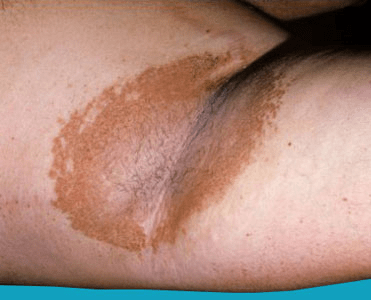

Erythrasma is a bacterial infection that affects the skin. It usually appears in the folds of the skin. It’s more commonly seen in warm or humid climates, and is usually caused by the bacteria Corynebacterium minutissimum. Erythrasma tends to be a chronic or long-term skin condition.

Complications are rare with erythrasma. In rare cases, erythrasma can become more serious. Septicemia, a serious blood infection, may develop.